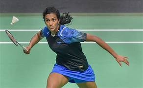

Sindhu fought her heart out before going down narrowly to Thailand's Supanida Katethong in the women's singles quarterfinals of the Madrid Spain Masters
However, India's husband-wife combo of N Sikki Reddy and B Sumeeth Reddy had a lot to cheer about as they notched up a 14-21 21-11 21-17 win over Indonesia's fourth seed Rehan Naufal Kusharjanto and Lisa Ayu Kusumawati to enter the mixed doubles semifinals.
The women's doubles pair of Tanisha Crasto and Ashwini Ponnappa, seeded third, lost 13-21 19-21 to sixth seeded Chinese Taipei's Lee Chia Hsin and Teng Chun Hsun in the quarterfinals.
The rallies started getting tighter after resumption as Sindhu kept ahead at 14-10, but thereafter, momentum kept changing with Supanida grabbing two game points when Sindhu found the net.
© 2024 Knowledge Hub. All Rights Reserved.